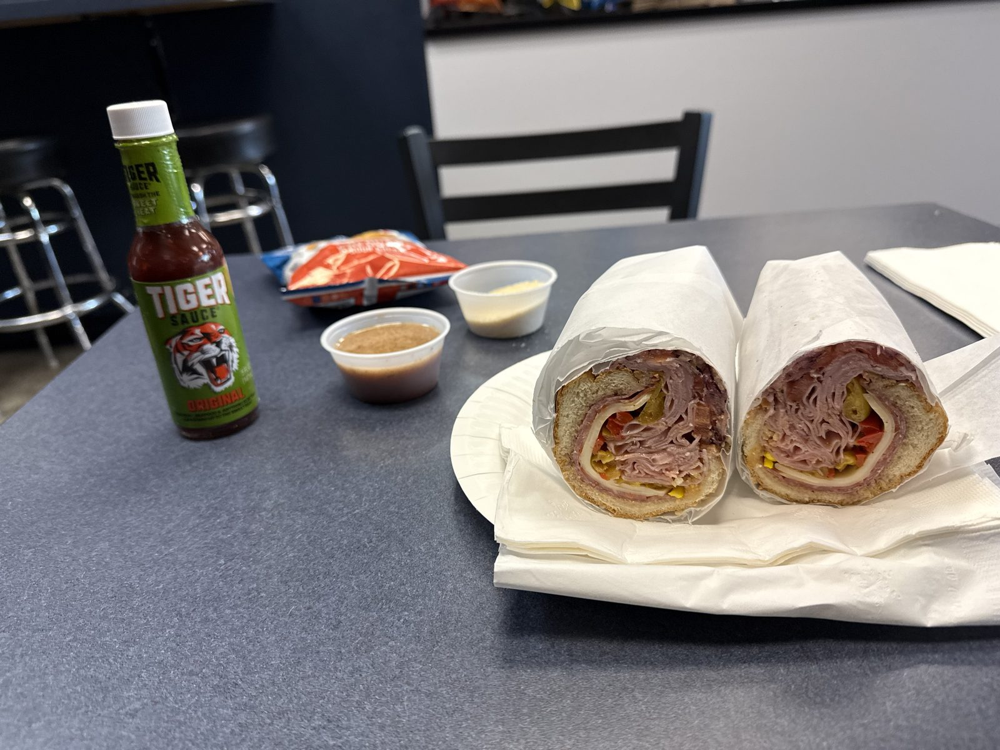

Dress It Yourself, at Philly Bilmos

Dinner tonight was the Italian sub at Philly Bilmos, a cheesesteak shop in Vancouver, Washington — and the sandwich I'd point someone to isn't the one in the name. This is, I think, the best Italian sub I've ever had, and it's the kind of sandwich worth a thirty-mile drive every once in a while just to get one.
What's actually rolled up in it
Philly Bilmos builds the Italian off Boar's Head ham, capicola and Genoa salami with provolone, roasted red peppers, pepperoncini, tomato, red onion and oregano — all of it on the same Amoroso-style roll the shop uses for its cheesesteaks, since, as they put it themselves, if you've ever actually been to Philly you know the bread is half the argument. Cut in half, the cross-section is a tight spiral of meat and cheese with the pepperoncini and red onion showing through in rings — more meat than roll, which is exactly the ratio a sub like this should have.
Dress it yourself
The sandwich doesn't come dressed — it comes with the dressing on the side. A cup of oil and vinegar and a cup of grated parmesan, meant to go on at the table rather than under the deli paper, plus a bottle of Tiger Sauce sitting on the table for anyone who wants heat with it. It's a small thing, but it's the difference between a sub that's been sitting dressed since it was made and one that's still dry bread and cold cuts until you decide it isn't.
The best Italian sub I've ever had.
Is Philly Bilmos worth the drive?
Philly Bilmos has been in Vancouver, Washington since December 2000, at 2100 SE 164th Ave, and it's open 11am to 8pm every day but Monday. It's built its name on the cheesesteak — the storefront says so — and that's probably the right first order for most people walking in for the first time. But if a shop that's spent twenty-plus years perfecting one specific sandwich can also turn out an Italian sub this good on the side, that says something about the kitchen, not just the menu. The last sub shop that showed up on this blog was a chain, Firehouse Subs, and this isn't really the same competition. Five stars, and I mean it as the top of the scale is meant to be used — worth going out of your way for.